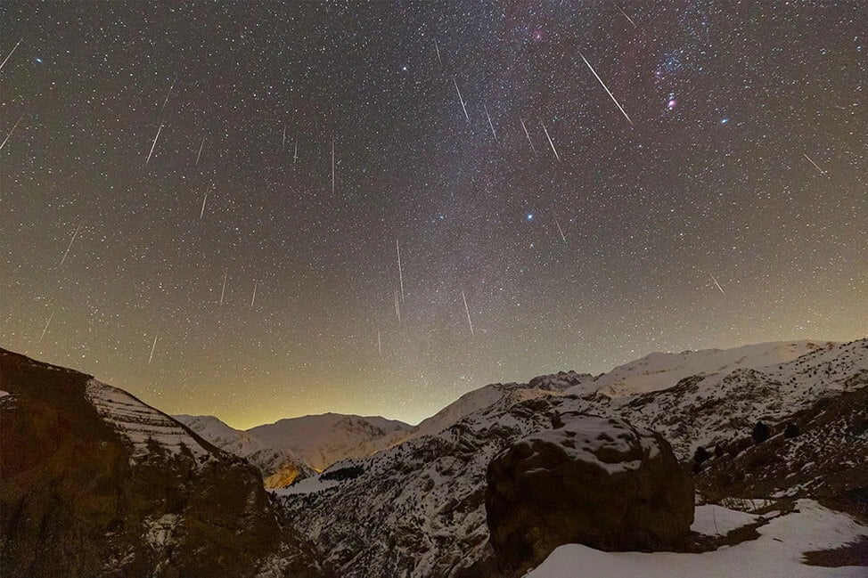
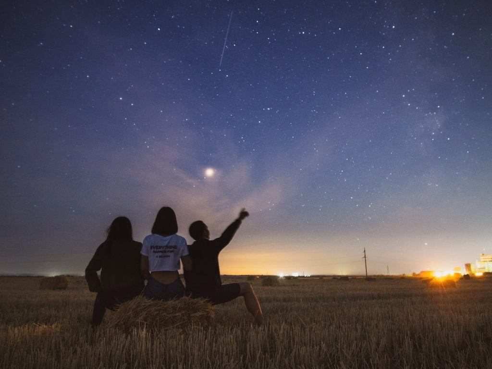
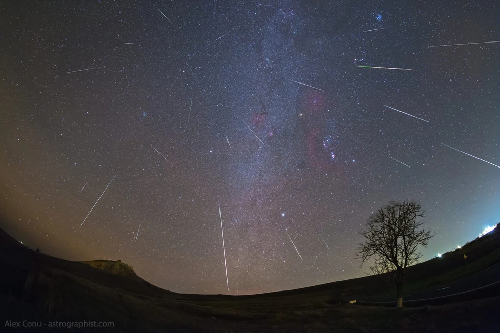

ဒီ ဂျင်မစ်နစ် ကြယ်မိုးဟာ နှစ်စဉ် ဒီဇင်ဘာ လလယ်လောက်မှာ ပေါ်ပေါက် လာလေ့ ရှိတဲ့ ကြယ်မိုး ဖြစ်ပါတယ်။ ကြယ်ကြွေတာ အများဆုံး အချိန်တွေ မှာဆို တစ်နာရီကို ဥက္ကာပျံ အစင်း ၁၅၀ လောက်ထိ ကြွေကျတာကို မြင်တွေ့ ရနိုင်တဲ့ အထိ အားကောင်းတဲ့ ကြယ်မိုး ဖြစ်ပါတယ်။
ဒီ ကြယ်မိုးဟာ ဒီဇင်ဘာ လဆန်းကတဲက စတင်ခဲ့တာ ဖြစ်ပေမယ့် တကယ် အများအပြား ကြယ်ကြွေတာကို တွေ့ရမှာ ကတော့ လာမယ့် ဒီဇင်ဘာ ၁၃ နဲ့ ၁၄ ညတွေကျမှ ဖြစ်ပါတယ်။ ဒီ ကာလဟာ ကြယ်မိုး အသည်းဆုံး ကာလ ဖြစ်ပြီး ဒီရက် လွန်သွားရင်တော့ တဖြည်းဖြည်း ကြယ်ကြွေတဲ့ အရေအတွက်လဲ လျှော့နည်း သွားမှာ ဖြစ်ပါတယ်။

ဒီ ကာလမှာ တစ်နာရီကို ကြယ်ကြွေ အရေအတွက် ၁၅၀ လောက်အထိ မြင်တွေ့ရဖို့ ရှိတယ်လို့ ဆိုပါတယ်။ ဒီ ကြယ်ကြွေတာကို မှန်ဘီလူး မလိုပဲ သာမန် မျက်စေ့နဲ့ မြင်တွေ့ ကြရမှာ ဖြစ်ပါတယ်။
ဒီ ကြယ်ကြွေတာကို အပြည့်အဝ တွေ့မြင် ဖို့အတွက်ဆို မြို့ပြတွေရဲ့ အလင်းရောင် အနှောက်အယှက် နည်းတဲ့ တောရွာ ပိုင်းတွေကနေ ပိုပြီး မြင်တွေ့နိုင်မှာ ဖြစ်ပါတယ်။ မြန်မာပြည် မြို့ကပြ တွေကတော့ ညဖက် မီးပျက်နေချိန် ဆိုရင်တော့ မြင်ရဖို့ ဘာမှ အခက်အခဲ ရှိလှမှာ မဟုတ်ပါဘူး။

ဒီ ဂျင်မစ်နစ် ကြယ်မိုးဟာ ယခင်က ဂြိုဟ်သိမ် (Asteroid) ကြီး တစ်ခု အစိတ်စိတ် ကွဲကြေ သွားရာက ကျန်ရစ်တဲ့ အပိုင်းအစ အသေးလေးတွေ ကြားထဲကို ကမ္ဘာက ဖြတ်ပြီး ဝင်ရောင် သွားတဲ့ အချိန် ဖြစ်ပေါ်လာရတာ ဖြစ်ပါတယ်။
ဒီ အပိုင်းအစ တွေကြားထဲ ကမ္ဘာ ဖြတ်ဝင်ချိုင်မှ ကမ္ဘာ့ လေထုထဲကို အပိုင်းအစ စိတ်အပိုင်း လေးတွေ ဝင်ရောက် လောင်ကြွမ်း ကြရာကနေ ကြယ်ကြွေမိုး ဖြစ်ပေါ် လာတာပဲ ဖြစ်ပါတယ်။
ဒီ ဂျင်မစ်နစ် ကြယ်မိုး အပြီး လာမယ့် ဒီဇင်ဘာ ၂၁-၂၂ မှာတော့ အားဆစ် (Ursid meteor shower) ကြယ်မိုး ရွာမှုကို ဆက်လက် မြင်တွေ့ ကြရမှာ ဖြစ်တယ်လို့ သိရပါတယ်။

Geminids meteor shower predicted to hit Thailand on December 14 | Thaiger
Geminid meteor shower to light up December sky | Accuweather